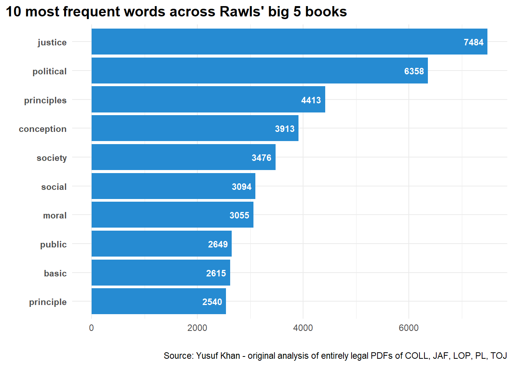
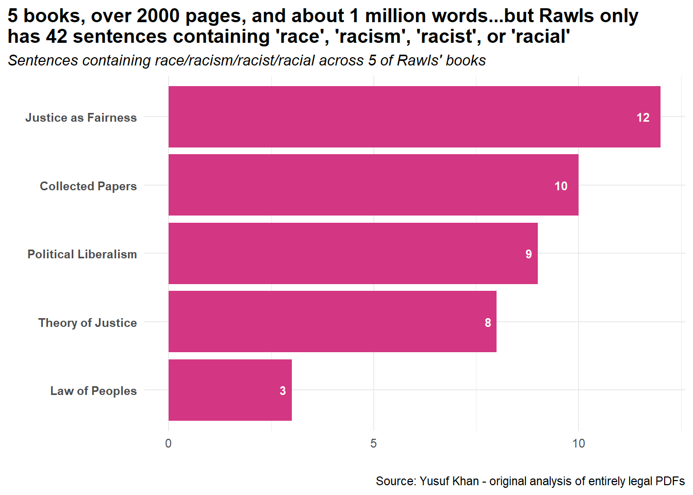
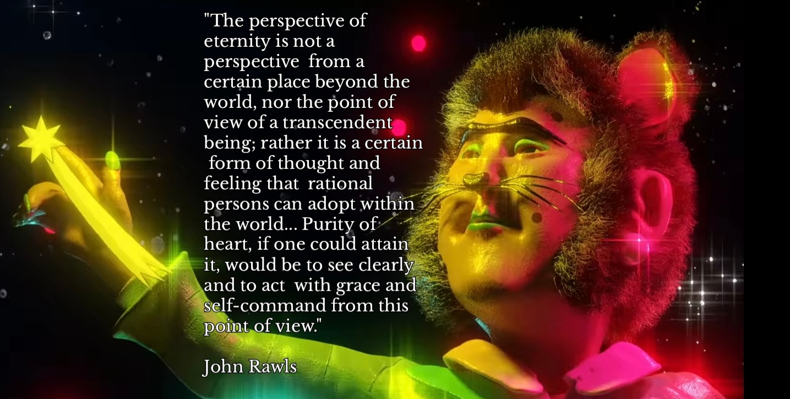

library(tidyverse)
library(pdftools)
library(tidytext)
library(tokenizers)Mills, Race, and Rawls
Political Philosophy
28/08/2024 - This blog post is based on some charts I made for my Contemporary Political Theory students while we were covering critics of Rawls, including Mills. I was trying to keep it interesting for them. I’m retrospectively posting it here, tagged with the original date, because why not…
In “Black Rights/White Wrongs: The Critique of Racial Liberalism”, Charles Mills writes the following on Rawls:
“The person seen as the most important twentieth-century American political philosopher and theorist of social justice, and a fortiori the most important American contract theorist, had nothing to say about the remediation of racial injustice, so central to American society and history. His five major books (excluding the two lecture collections on the history of ethics and political philosophy)—A Theory of Justice, Political Liberalism, Collected Papers, The Law of Peoples, and Justice as Fairness: A Restatement—together total over 2,000 pages. If one were to add together all their sentences on race and racism, one might get half a dozen pages, if that much”
Charles Mills, 2017, 35
Now I thought “why not attempt this?”. Seems straightforward, and we have tools that make it pretty easy.
But first, we have to conduct a thought experiment. Suppose one legally obtained PDFs of:
A Theory of Justice
Political Liberalism
Rawls’ Collected Papers
The Law of Peoples
Justice as Fairness: A Restatement
In a manner similar to the purely hypothetical nature of the original position, how might one add together all the sentences on race and racism?
Well first you might load up some packages:
Then you might read your hypothetical PDFs in as a list:
files <- list.files(pattern = "pdf$")
rawls_books <- lapply(files, pdf_text)After that, you could extract the sentences and words from all the books and turn them into dataframes:
# Use map to extract sentences from each PDF and combine into a data frame
text_df_sentences <- purrr::map_dfr(files, function(file) {
pdf_text <- pdf_text(file)
sentences <- unlist(tokenizers::tokenize_sentences(pdf_text))
data.frame(
sentence = sentences,
document = rep(file, length(sentences))
)
})
text_df_words <- purrr::map_dfr(files, function(file) {
pdf_text <- pdf_text(file)
words <- unlist(tokenizers::tokenize_words(pdf_text))
data.frame(
word = words,
document = rep(file, length(words))
)
})Then you might wish to do some basic analysis where you count most frequent words.
text_df_words <- text_df_words %>%
anti_join(stop_words)
word_freq <- text_df_words %>%
count(word, sort = TRUE)
most_freq <- head(word_freq, 10)
glimpse(most_freq)Rows: 10
Columns: 2
$ word <chr> "justice", "political", "principles", "conception", "society", "s…
$ n <int> 7484, 6358, 4413, 3913, 3476, 3094, 3055, 2649, 2615, 2540Could turn that into a nice chart.
Code
p1 <- most_freq %>%
mutate(word = fct_reorder(word, n)) %>%
ggplot(aes(word, n)) +
geom_bar(stat="identity", fill="#268bd2") +
coord_flip() +
labs(title = "10 most frequent words across Rawls' big 5 books",
caption = "Source: Yusuf Khan - original analysis of entirely legal PDFs of COLL, JAF, LOP, PL, TOJ") +
theme_minimal() +
theme(plot.title.position = "plot") +
ylab("") +
xlab("") +
theme(plot.title.position = "plot",
plot.title = element_text(size = 14, face = "bold"),
plot.subtitle = element_text(face = "italic"),
axis.text.y = element_text(face = "bold")
) +
geom_text(aes(label = n), hjust = 1.2, size = 3, colour = "white", fontface = "bold")
# ggsave("rawls_count.png", plot = p1, width = 6, height = 4, units = "in", bg = "#fdf6e3")
p1
What about counting the sentences mentioning race? Well…you could interpret Mills very crudely and just flag race/racism/racist/racial. This approach isn’t very careful. Other terms such as “black”, “white”, “indigenous”, “Jim Crow”, “native”, “skin”, “colour/color”, “segregation” and so on could all be used to discuss race.
So perhaps a more sophisticated approach is called for? Ah but even when you’ve looked for these terms…it isn’t looking good. So to keep things simple, you resolve to look for race/racism/racist/racial. This could crudely support Mills’ point but its not very complete.
count_race <- text_df_sentences %>%
filter(str_detect(sentence, "\\b(?:race|racism|racist|racial)\\b")) %>%
mutate(book = case_match(
document,
"RawlsCOLL.pdf" ~ "Collected Papers",
"RawlsJAF.pdf" ~ "Justice as Fairness",
"RawlsLOP.pdf" ~ "Law of Peoples",
"RawlsPL.pdf" ~ "Political Liberalism",
"RawlsTOJ.pdf" ~ "Theory of Justice",
.default = document
),
count = 1
) %>%
group_by(book) %>%
summarise(sum = sum(count)) %>%
ungroup() %>%
arrange(sum)
glimpse(count_race)Rows: 5
Columns: 2
$ book <chr> "Law of Peoples", "Theory of Justice", "Political Liberalism", "C…
$ sum <dbl> 3, 8, 9, 10, 12You could also turn this into a chart and report the findings.
Code
p2 <- count_race %>%
mutate(book = fct_reorder(book, sum)) %>%
ggplot(aes(book, sum)) +
geom_bar(stat="identity", fill = "#d33682") +
coord_flip() +
theme_minimal() +
ylab("") +
xlab("") +
labs(title = "5 books, over 2000 pages, and about 1 million words...but Rawls only \nhas 42 sentences containing 'race', 'racism', 'racist', or 'racial'",
subtitle = "Sentences containing race/racism/racist/racial across 5 of Rawls' books",
caption = "Source: Yusuf Khan - original analysis of entirely legal PDFs") +
theme(plot.title.position = "plot",
plot.title = element_text(size = 14, face = "bold"),
plot.subtitle = element_text(face = "italic"),
axis.text.y = element_text(face = "bold")) +
geom_text(aes(label = sum), hjust = 1.8, size = 3, colour = "white", fontface = "bold") +
scale_y_continuous(breaks = scales::pretty_breaks(n = 4))
ggsave("rawls_race.png", plot = p2, width = 6.5, height = 4, units = "in", bg = "#fdf6e3")
p2
Let’s return to Mills’ claim:
If one were to add together all their sentences on race and racism, one might get half a dozen pages, if that much
How does Rawls fare? First, let’s check the average sentence length across all his major works:
# Calculate number of words per sentence
text_df_sentences <- text_df_sentences %>%
rowwise() %>%
mutate(word_count = str_count(sentence, "\\S+"))
# Calculate average sentence length across all sentences
average_sentence_length <- mean(text_df_sentences$word_count)
average_sentence_length[1] 23.83138Next, let’s assume a page has 450 words and calculate the number of sentences per page (sorry I am not bothered to break up the files by page):
words_per_page <- 450
# Estimate sentences per page
sentences_per_page <- words_per_page / average_sentence_length
sentences_per_page[1] 18.88267If Rawls’ work only has 42 sentences containing “race”, “racism”, “racist”, or “racial”…this roughly comes to [rapidly taps racism calculator]:
rawls_race_pages <- 42/sentences_per_page
rawls_race_pages[1] 2.2242622.2 pages. I am shocked. SHOCKED I SAY.
But remember, this is all a thought experiment. Suppose one legally obtained those PDFs. So, all of this is hypothetical, of course…
